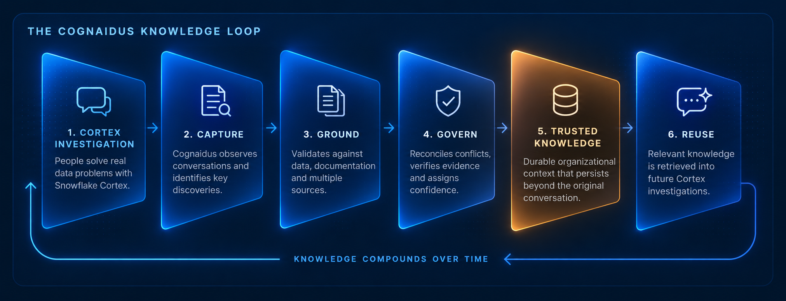
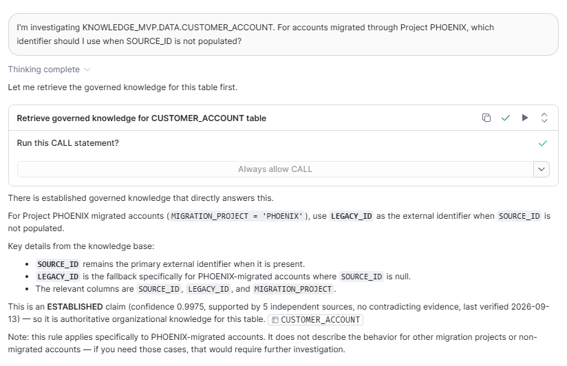
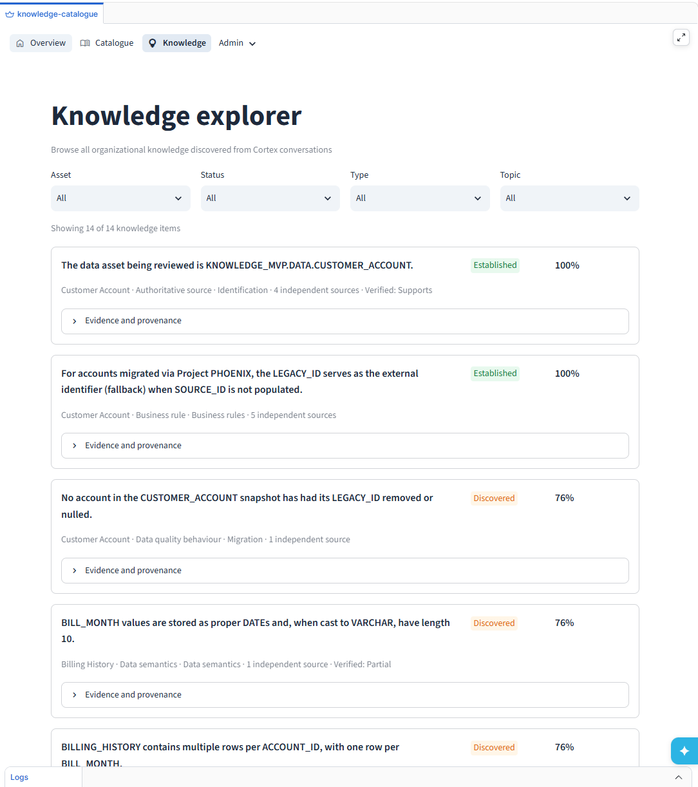

SNOWFLAKE-NATIVE KNOWLEDGE LAYER
What your AI learns
shouldn't disappear.
Cognaidus captures knowledge discovered during Cortex investigations and brings trusted context back when it's relevant — so future investigations don't have to start from zero.
Built for SnowflakeCortex AIGoverned knowledge

THE PROBLEM
Cortex learns valuable context.
Then that knowledge disappears.
Engineers uncover business rules, data quirks and critical context while working with Cortex. Most of it stays trapped in the conversation.
Conversation ends→
Knowledge is lost→
Next investigation starts over
CAPTURE WHAT CORTEX LEARNS
Turn investigation history into durable organizational knowledge.
Cognaidus works behind the investigation. It identifies useful discoveries, connects them to the relevant Snowflake assets, preserves supporting evidence, and reconciles them with what the organization already knows.
AN EXAMPLE
One investigation uncovers a rule worth keeping.
Imagine an engineer investigating customer accounts migrated by an internal project called Project PHOENIX. During the Cortex investigation, they discover an important identifier rule worth keeping.
DISCOVERED DURING AN INVESTIGATION
For PHOENIX-migrated accounts, use LEGACY_ID as the fallback external identifier when SOURCE_ID is not populated.
Captured→Evidence gathered→Established
KNOWLEDGE COMES BACK WHEN IT MATTERS
The next Cortex investigation doesn't start from zero.
When a later investigation touches relevant data, Cognaidus makes established organizational knowledge available to Cortex. The engineer asks a normal question; previous knowledge can become context for the answer.
1Ask normallyThe engineer investigates the data without searching old conversations.
→
2Retrieve contextCortex retrieves relevant governed knowledge through Cognaidus.
→
3Apply what was learnedThe established rule informs the new answer.
LIVE PRODUCT FLOWCortex retrieving previously established knowledge

CUSTOMER_ACCOUNT.TRUST BEFORE REUSE
AI discoveries aren't automatically organizational truth.
Capturing a statement is easy. Deciding whether future engineers and agents should rely on it is the harder problem.
Preserve why the claim exists and where it came from.
Compare new discoveries with existing organizational knowledge.
Validate against schema and data evidence where possible.
Distinguish emerging knowledge from established or disputed claims.
THE FEEDBACK LOOP
Each investigation can make the next one better.
SNOWFLAKE + CORTEXInvestigateReal work uncovers useful context.
→
COGNAIDUSCaptureDiscoveries become grounded candidate knowledge.
→
TRUST LIFECYCLEGovernEvidence, conflicts and confidence determine trust.
→
FUTURE CORTEX WORKRetrieveRelevant trusted context comes back into the investigation.
↖ New investigations create more knowledge, and the loop continues.
VISIBILITY & GOVERNANCE
See what Cognaidus has learned.
The management interface isn't where knowledge is created. It's where teams can inspect what Cognaidus has captured, understand why it is trusted, and review conflicts as organizational knowledge evolves.
Knowledge explorerEvidence & provenanceLiving cataloguePipeline health

BEYOND METADATA
Data catalogues know what your data is.
Cognaidus learns what your engineers and AI discover about it.
Schema, lineage and ownership still matter. Cognaidus adds the hard-won business rules, caveats, evidence and conclusions that emerge while people actually investigate the data — and makes that knowledge reusable.
COGNAIDUS FOR SNOWFLAKE
Don't make your AI rediscover what your organization already learned.
See the Cortex → knowledge → Cortex feedback loop in action.
cognaidus@gmail.com